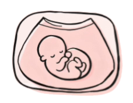
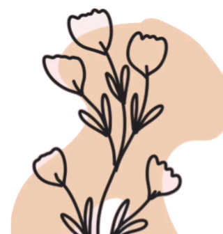
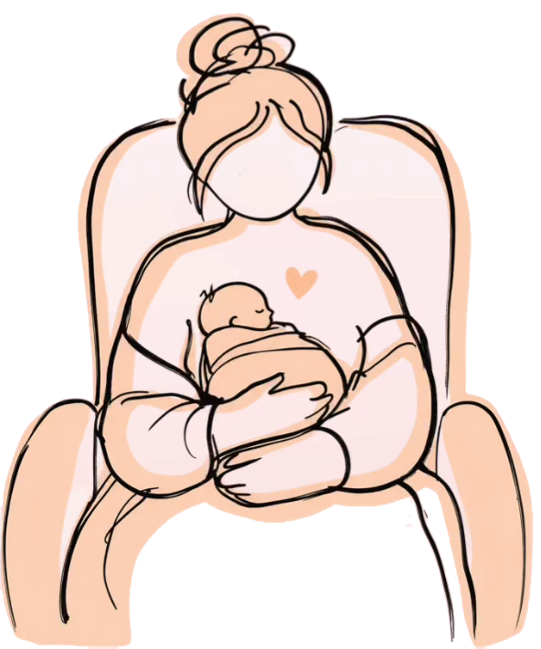
PartoePuerpério
Isadora Muotri
Nathalia Machado
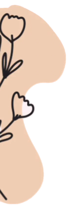
Parto
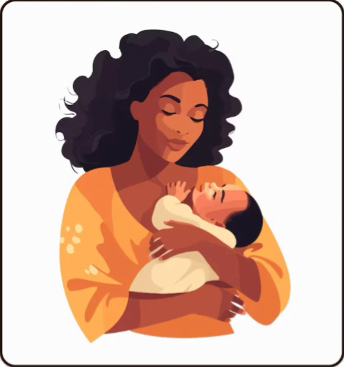
O parto é o término da gravidez, momento em que o feto e seus anexos (como a placenta) saem do organismo materno. Esse processo marca a transição do bebê do ambiente uterino para o mundo exterior.
O trabalho de parto dura em média 12 a 18 horas na primeira gravidez e tende a ficar mais breve durante 6 a 8 horas nas gestações seguintes.
Fases do parto vaginal
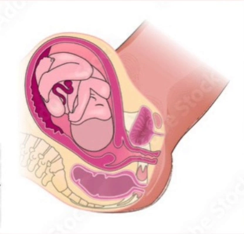
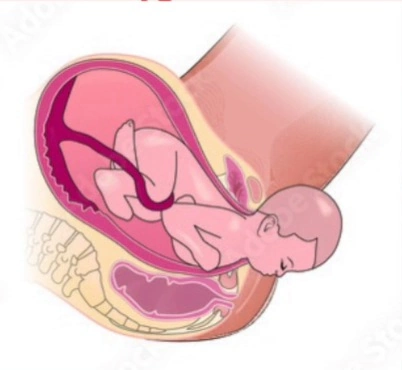
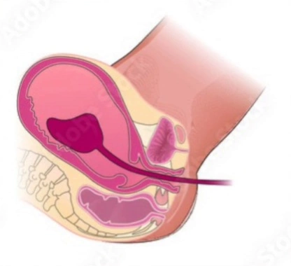
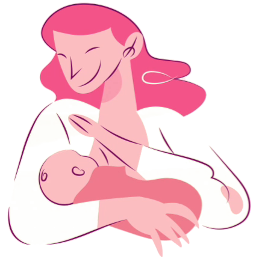
(Greenberg)
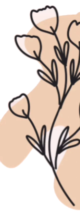
Atuação da fisioterapia durante o trabalho de parto vaginal
| Períodos | Atuação da fisioterapia | Objetivo |
|---|---|---|
| Dilatação | Orientação respiratória, massagem lombossacral, bola suíça, TENS, mudança de posição | Aliviar dor, promover relaxamento, melhorar a mobilidade pélvica e proporcionar conforto |
| Expulsivo | Orientação respiratória, auxílio no posicionamento, consciência corporal e relaxamento do AP | Favorecer conforto materno, auxiliar na coordenação respiratória e permitir posições adequadas para o nascimento |
| Dequitação | Acolhimento, orientação e auxílio no conforto materno | Proporcionar conforto e apoiar a mulher durante a saída da placenta |
Principais disfunções durante o parto vaginal
- Atonia uterina
- Tensão do assoalho pélvico
- Diástase
- Dor lombopélvica
- Distocia
- Alterações respiratórias
- Hemorragia obstétrica
- Disfunções musculares e articulares
- Prolapso do cordão umbilical
- Trauma perineal
Fases do parto cesárea
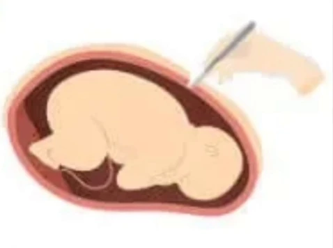
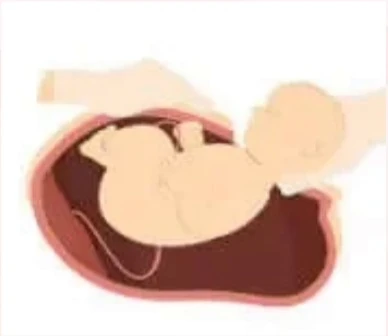
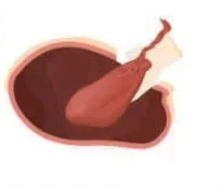
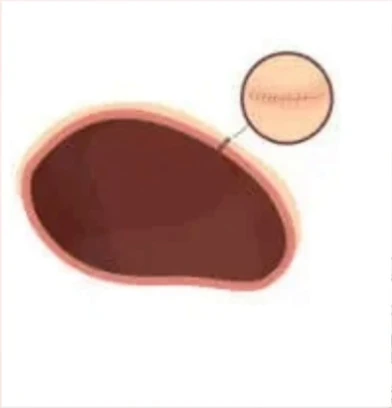
Atuação da fisioterapia durante o trabalho de parto cesárea
| Períodos | Atuação da fisioterapia | Objetivo |
|---|---|---|
| Pré-operatório | Orientações respiratórias, ensino de exercícios circulatórios, mobilização precoce. | Preparar a gestante para o pós-operatório, reduzir complicações associadas à imobilidade. |
| Intraoperatório | Atenção ao posicionamento materno, acompanhamento respiratório quando indicado. | Contribuir com o conforto e segurança materna, dentro das atribuições da equipe multidisciplinar. |
| Pós-operatório imediato | Respiração diafragmática, mobilização circulatória, orientações para a proteção da incisão durante a tosse | Proporcionar conforto e apoiar a mulher durante a saída da placenta |
Principais disfunções durante o parto cesárea
- Náuseas e vômitos
- Dor abdominal
- Lesões da bexiga
- Hipotensão materna
- Reação anestésica
- Hemorragia obstétrica
- Broncoaspiração
- Lesões do intestino
- Atonia uterina
- Complicações tromboembólicas
Diástase
A diástase dos retos abdominais (DRA) é a separação anormal entre os dois feixes do músculo reto abdominal causada pelo estiramento e afinamento da linha alba. Do ponto de vista anatômico e biomecânico, não ocorre ruptura muscular, mas sim uma perda de tensão e integridade viscoelástica do tecido conjuntivo fibroso que une a parede anterior do abdômen.
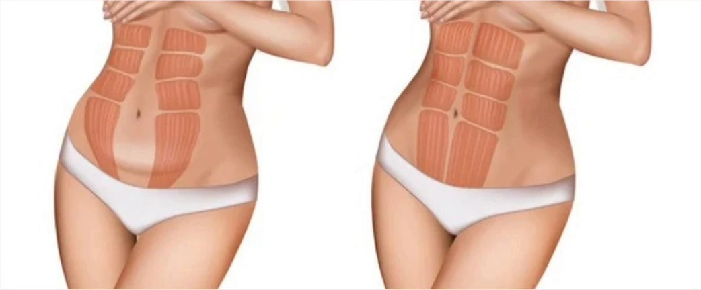
Mecanismo de afastamento
O aumento crônico ou agudo da pressão intra-abdominal (PIA) — somado a alterações hormonais como a ação da relaxina e do estrogênio na gestação — promove o remodelamento das fibras de colágeno. Esse processo alarga e adelgaça a linha alba, afastando as bordas mediais dos músculos retos (geralmente diagnosticado quando a distância inter-retos ultrapassa 2 cm a 2,5 cm)
Sinais e sintomas
- Abaulamento na região central do abdomen
- Formação de elevação na linha média ao realizar esforço
- Sensação de fraqueza abdominal
- Desconforto lombar em alguns casos
- Alterações no controle de tronco
- Dificuldade para realizar determinados movimentos
- Alterações na percepção corporal
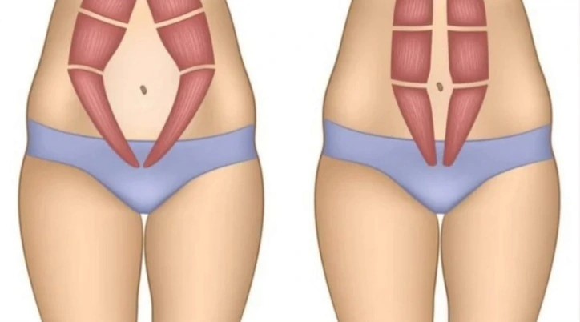
Avaliação fisioterapêutica da diástase abdominal
- Anamnese
- Inspeção
- Palpação
- Mensuração
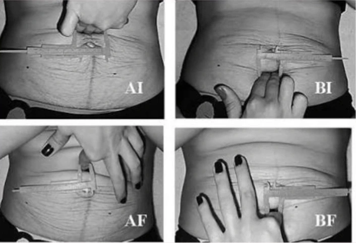
Exercícios fisioterapêuticos e objetivos
| Exercícios fisioterapêuticos 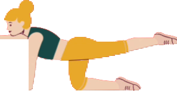 |
Objetivos 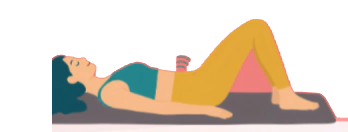 |
|---|---|
|
|
Puerpério
O puerpério é o período que se inicia imediatamente após o parto e corresponde a fase de recuperação e adaptação do organismo materno às condições pós-gestacionais.
É marcado por alterações hormonais, anatômicas, fisiológicas, musculoesqueléticas, emocionais e psicossociais.
Fases do puerpério
| Imediato 1° ao 10° dia | Tardio 11° ao 42° dia | Remoto a partir de 42 dias |
|---|---|---|
|
|
|
Principais alterações fisiológicas
| Estrutura/sistema | Alteração |
|---|---|
| Útero | Involução uterina |
| Hormonal | Redução de estrogênio e progesterona |
| Mamas | Lactogênese e lactação |
| Abdômen | Alongamento e recuperação da parede abdominal |
| Assoalho pélvico | Alterações da força, resistência e coordenação |
| Circulatório | Readaptação hemodinâmica |
| Musculoesquelético | Adaptação postural e recuperação funcional |
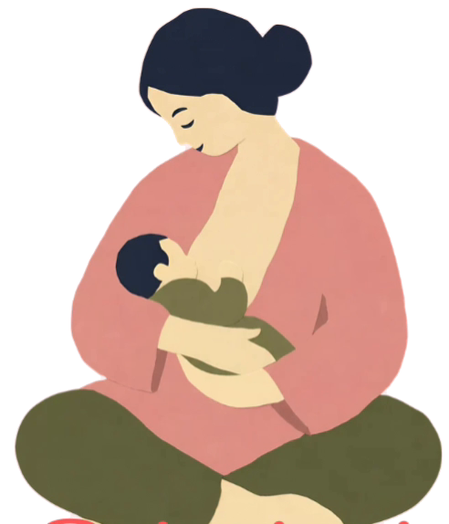
Principais disfunções no puerpério
- Incontinência urinária/fecal
- Prolapso de órgãos pélvicos
- Alterações do assoalho pélvico
- Diástase dos músculos retos do abdômen
- Dor lombopélvica e perineal
Objetivos da fisioterapia
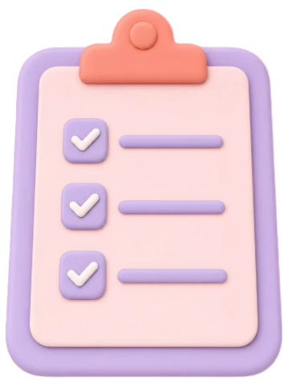
- Recuperar a função dos músculos do assoalho pélvico
- Melhorar força, resistência e coordenação muscular
- Prevenir e tratar incontinências urinária e fecal
- Promover a recuperação funcional
- Auxiliar na recuperação da estabilidade lombo-pélvica
- Reduzir dores e limitações funcionais
- Orientar o retorno seguro às atividades físicas
Avaliação fisioterapêutica
Parto vaginal
Assoalho pélvico
Avaliação da força, resistência e coordenação da musculatura do assoalho pélvico por meio das escalas.
Região perineal
Avaliação da intensidade dolorosa, integridade tecidual, sensibilidade e presença de lacerações ou episiotomia.
Musculatura abdominal
Avaliação da distância inter-retos, tensão da linha alba e função da parede abdominal.
Continência urinária e fecal
Investigação de incontinência urinária e anal, urgência miccional e alterações do controle esfincteriano.
Parto cesárea
Cicatriz cirúrgica
Inspeção da cicatrização, integridade tecidual, sensibilidade e mobilidade cicatricial.
Dor abdominal
Avaliação da intensidade pela EVA e investigação da dor durante movimentos.
Musculatura abdominal
Avaliação da ativação muscular, controle motor e estabilidade do tronco.
Diástase abdominal
Mensuração da distância inter-retos e avaliação da tensão da linha alba.
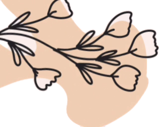
Instrumentos de avaliação
- • Oxford:
- Força muscular
- • PERFECT:
- Desempenho muscular
- • ICIQ-SF:
- Incontinência urinária
- • POP-Q:
- Prolapso pélvico
- • EVA:
- Intensidade da dor
- • Paquímetro:
- Diástase abdominal
Orientações
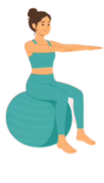
Ensinar a reconhecer a musculatura do assoalho pélvico.
Orientar contração e relaxamento quando indicados.
Avaliar sintomas de incontinência urinária e fecal.
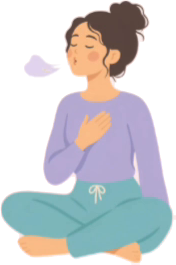
Orientar respiração diafragmática.
Trabalhar a percepção e o controle da musculatura abdominal.
Progredir os exercícios de fortalecimento conforme a recuperação.
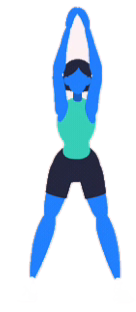
Retomar exercícios de fortalecimento gradualmente.
Evitar aumento brusco da intensidade.
Observar dor, sangramento e sensação de peso vaginal durante as atividades.
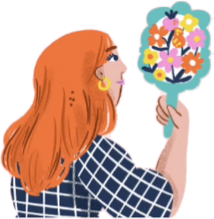
Evitar exercícios que provoquem dor ou tensão excessiva na região em recuperação.
Cesárea: orientar observação da cicatriz e respeito às recomendações de cuidados
Parto vaginal: orientar cuidados com o períneo, principalmente quando houver laceração ou episiotomia.
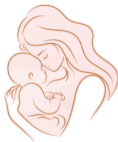
Postura durante a amamentação.
Ao pegar o bebê no berço.
Carregar o bebê
Transferências
Contraindicação
Condições que contraindicam ou exigem liberação médica para exercícios moderados a rigorosos.
- Hemorragia puerperal ou sangramento vaginal anormal.
- Infecção puerperal sistêmica acompanhada de febre e comprometimento do estado geral.
- Hipertensão arterial não controlada.
- Cardiomiopatia periparto.
- Anemia sintomática ou fadiga excessiva.
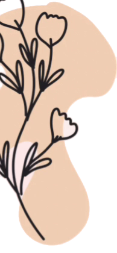
Artigo escolhido
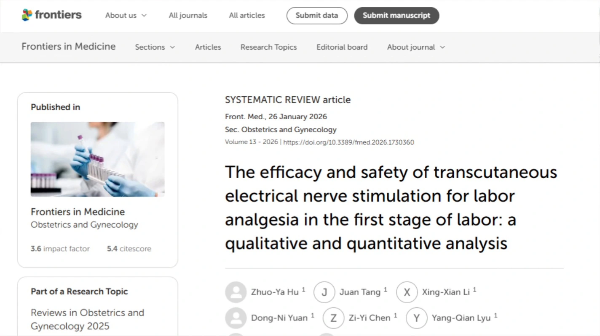
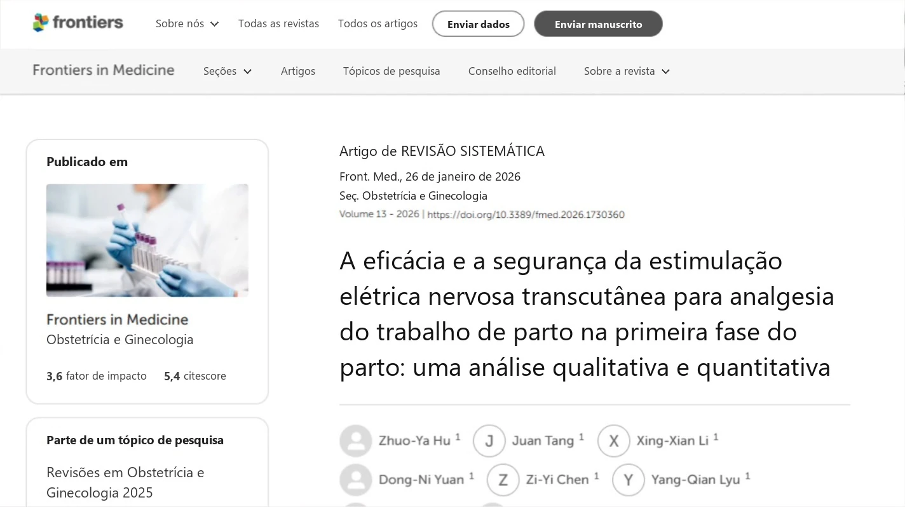
Hu, Zhuo-Ya et al. “The efficacy and safety of transcutaneous electrical nerve stimulation for labor analgesia in the first stage of labor: a qualitative and quantitative analysis.” Frontiers in medicine vol. 13 1730360. 27 Jan.
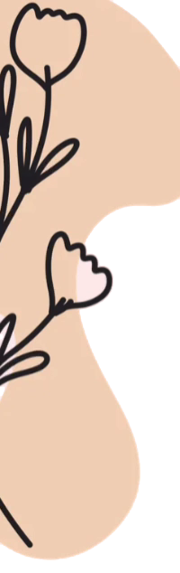
Sobre o artigo
Essa revisão apresenta resultados promissores sobre o uso do TENS no alívio da dor durante o trabalho de parto, reforçando seu potencial como recurso complementar na fisioterapia obstétrica.
Principais resultados:
- O TENS demonstrou potencial para reduzir a intensidade da dor durante o trabalho de parto.
- Pode contribuir para diminuir a duração da primeira fase do parto.
- Apresentou boa segurança, sem aumento significativo de efeitos adversos.
- Certeza da evidência. Os próprios autores classificam a qualidade da evidência como baixa (low-certainty evidence), o que exige cautela antes de concluir que o TENS substitui a analgesia peridural em termos de potência analgésica
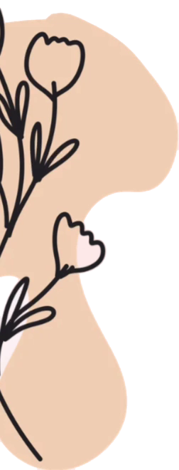
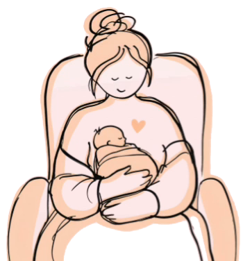
Conclusão
A fisioterapia tem um papel fundamental no parto e puerpério, promovendo conforto, prevenção de disfunções e recuperação funcional. Por meio de orientações e exercícios específicos, contribuem para a saúde, bem-estar e qualidade de vida da mulher em uma fase tão importante.